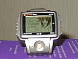

![[(R)uputer.com]](http://ruputer.com/link/image/ruputer_ll.gif)
Ruputer is a wearable personal computer in the shape of a watch. It is developed by Seiko Instruments Inc. in 1998. You can get more information at Ruputer's official page. In this platform, for personal developments, CodeWarrior is freely available. And gcc is ported.
If you select Windows as a development platform, you can download development tools from official site. But others, you should make gcc as a cross-compiler and collect some freewares. Here is the details in the case of BeOS or NetBSD.
 CCDA is originally developed by sugich-SAN for PalmOS. His CCDA page is here. This is a ported version of it for Ruputer. This software use elisa font. So you must install it previously. Elisa font for Ruputer exist on KAWAHARA Naoya-SAN's Ruputer page.